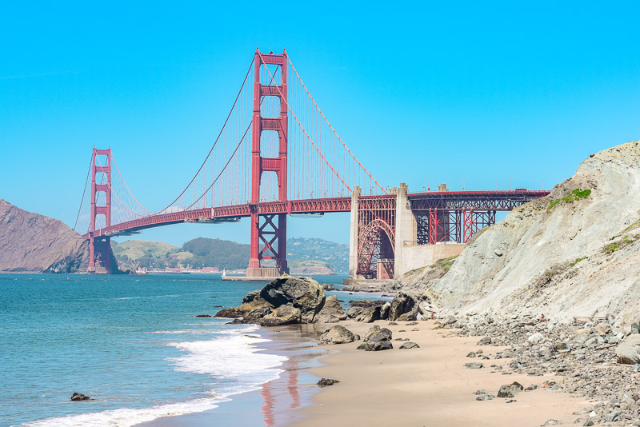
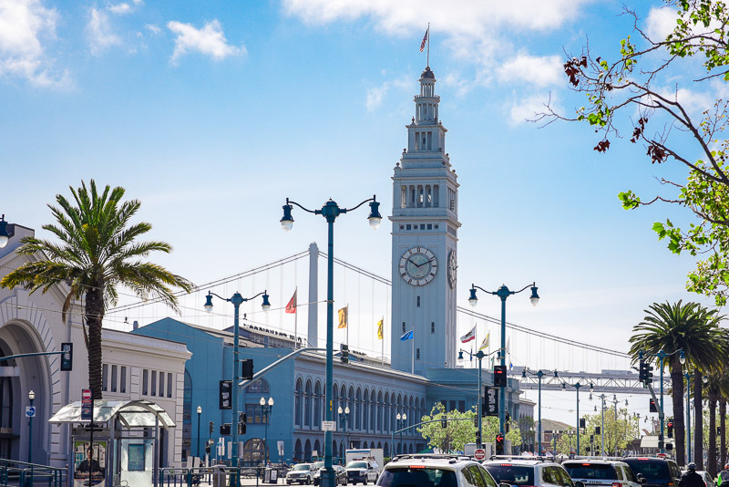
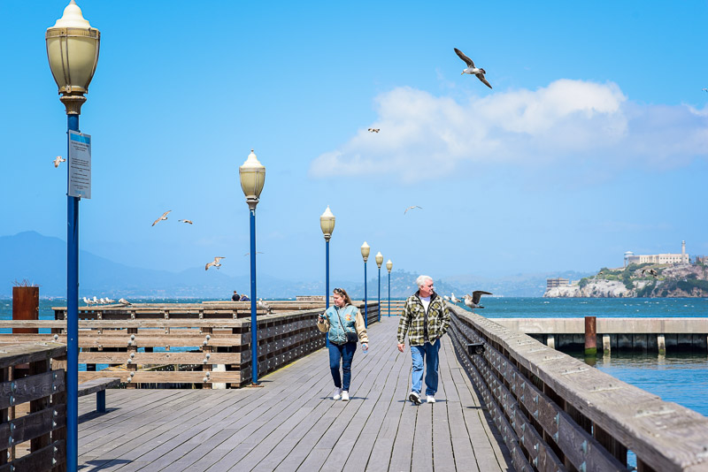
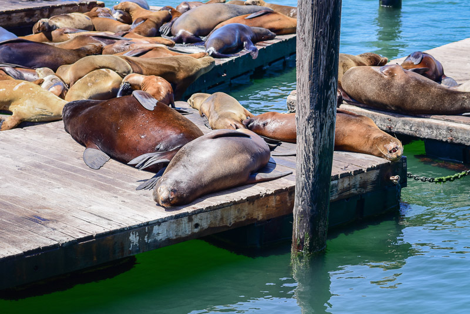
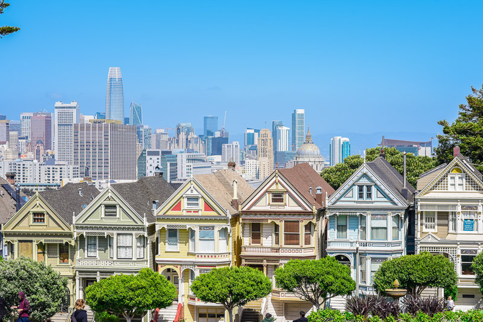

The Golden Gate Bridge is a suspension bridge spanning the Golden Gate, the one-mile-wide strait connecting San Francisco Bay and the
Pacific Ocean. The structure links the U.S. city of San Francisco, California - the northern tip of the San Francisco Peninsula - to Marin
County, carrying both U.S. Route 101 and California State Route 1 across the strait. The bridge is one of the most internationally
recognized symbols of San Francisco and California.
Google map

The San Francisco Ferry Building is a terminal for ferries that travel across the San Francisco Bay, a food hall and an office building.
It is located on The Embarcadero in San Francisco, California. On top of the building is a 245 - foot - tall clock tower with four clock
dials, each 22 feet in diameter, which can be seen from Market Street, a main thoroughfare of the city.
Google map

Pier 39 is a shopping center and popular tourist attraction built on a pier in San Francisco, California. At Pier 39, there are shops,
restaurants, a video arcade, street performances, the Aquarium of the Bay, virtual 3D rides. A two-story carousel is one of the pier's
more dominant features, although it is not directly visible from the street and sits towards the end of the pier. The family-oriented
entertainment and presence of marine mammals make this a popular tourist location for families with kids.
Google map

A famous views of California sea lions hauled out on docks on Pier 39's marina.
Google map
Aquarium of the Bay is a public aquarium located at The Embarcadero and Beach Street, at the edge of Pier 39 in San Francisco, California.
The Aquarium is focused on local aquatic animals from the San Francisco Bay and neighboring rivers and watersheds as far as the Sierras.
Google map

In American architecture, painted ladies are Victorian and Edwardian houses and buildings repainted, starting in the 1960s, in three or
more colors that embellish or enhance their architectural details. The term was first used for San Francisco Victorian houses by writers
Elizabeth Pomada and Michael Larsen in their 1978 book Painted Ladies: San Francisco's Resplendent Victorians.
Google map